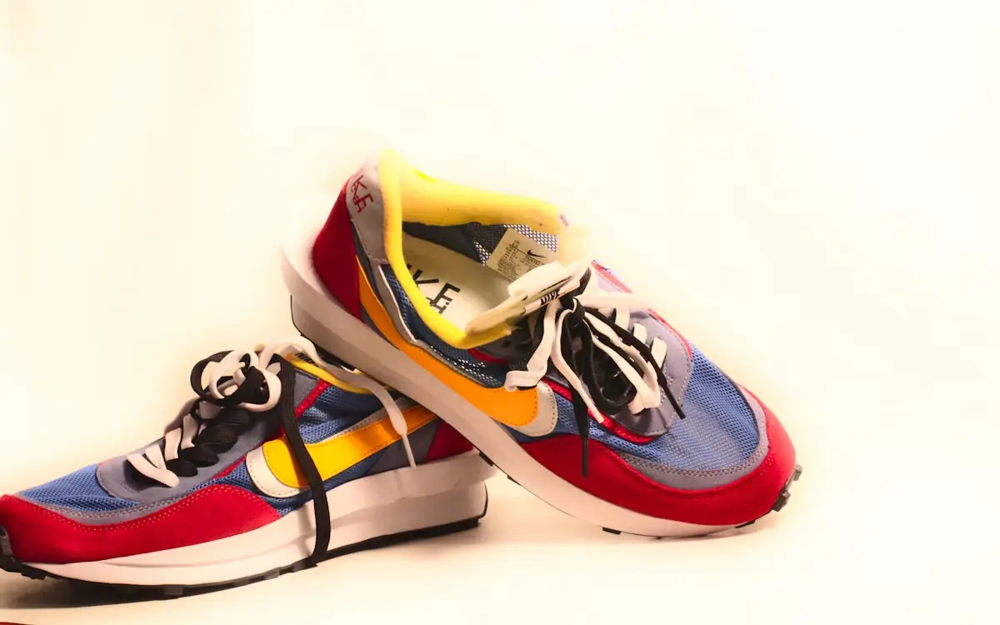
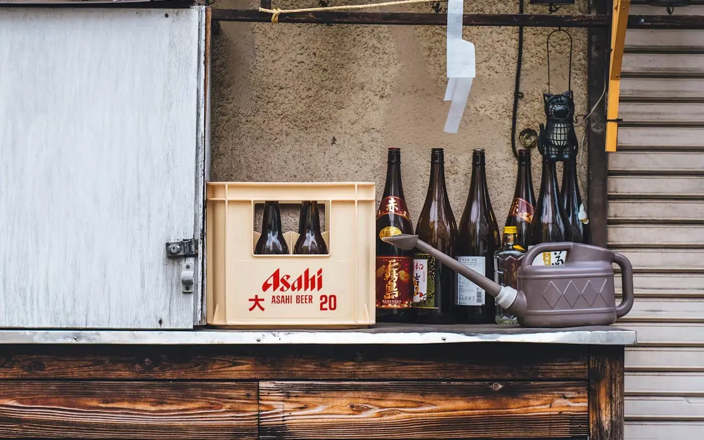
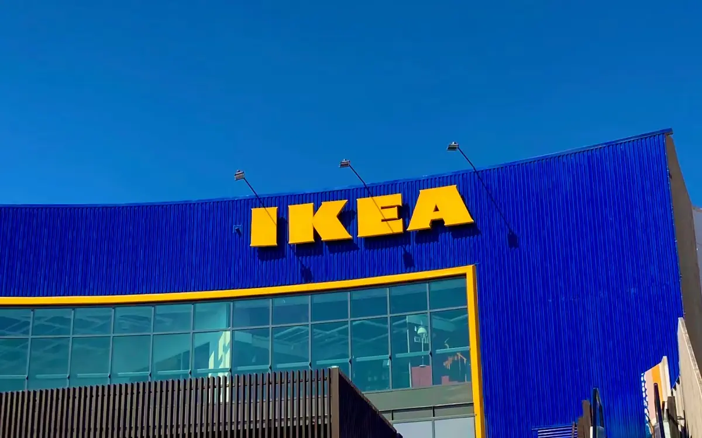
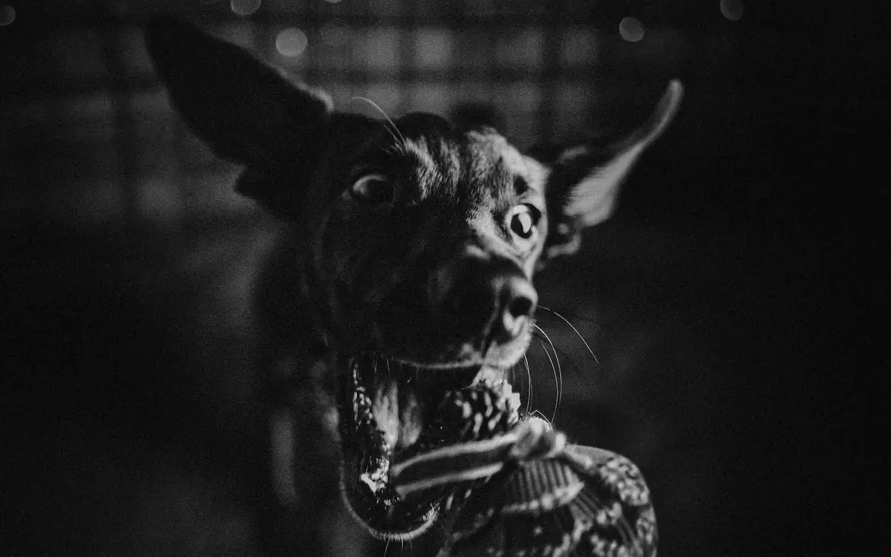

Blog
Noticias y casos recientes sobre marcas, propiedad intelectual y disputas que vale la pena entender.

American Eagle y OVERSLEPT: una marca previa convirtió un lanzamiento en un pleito federal
Una disputa reciente muestra por qué revisar antecedentes antes de lanzar un nombre puede ahorrar un problema mucho mayor.

Nike, 7-Eleven y unos Air Max: ¿también se pueden proteger los colores de una marca?
7-Eleven llevó a Nike a tribunales por unos Air Max 95 asociados con su combinación de colores y una fecha especialmente simbólica.

Michelob Ultra vs. Amstel Ultra: la batalla por parecerse demasiado en México
La disputa entre dos grandes cerveceras volvió a la agenda judicial mexicana y pone el foco en la protección de la imagen comercial.
¿Una “K” puede parecer demasiado a una “N”? New Balance demanda a Decathlon
New Balance sostiene que un símbolo usado en calzado KIPRUN de Decathlon se parece demasiado a su conocida “N”.

¿Puedes usar una marca famosa como parodia? IKEA llevó la pregunta al Tribunal de Justicia de la UE
Un partido político utilizó el nombre y la estética de IKEA para presentar un plan y el caso terminó ante el Tribunal de Justicia de la Unión Europea.

Jack Daniel’s vs. un juguete para perros: ¿hasta dónde llega la protección de una marca famosa?
El caso Bad Spaniels volvió a cambiar de rumbo en agosto y sigue siendo uno de los ejemplos más extraños sobre marcas, parodia y reputación.